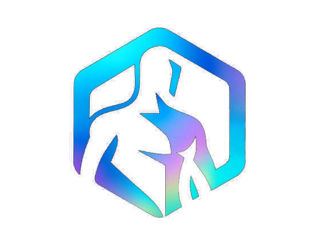

CALIVISION
Treine. Execute. Evolua.
Projeto em desenvolvimentoA ideia
Sem marcar “feito”
O usuário não conclui o exercício com um clique. Quem decide é a câmera, que acompanha o corpo em tempo real.
Só conta o completo
Uma máquina de estados exige o ciclo inteiro: posição inicial, descida, amplitude mínima, subida e retorno. Movimento incompleto é rejeitado.
Privacidade local
O processamento é feito no próprio computador. Não grava vídeo e não envia imagens para servidor.
Exercícios
| Exercício | Tipo | Critério inicial (a calibrar) |
|---|---|---|
| Flexão | repetições | cotovelo ≤ 90° embaixo, ≥ 155° em cima, corpo alinhado |
| Paralelas | repetições | cotovelo ≤ 90° embaixo, ≥ 155° em cima |
| Prancha | tempo | ombro-quadril-tornozelo ≥ 165°, só soma o tempo com postura válida |
| Agachamento | repetições | joelho ≤ 100° embaixo, ≥ 160° em cima |
Como usar
- Instale o Python 3.10 ou 3.11.
- Baixe o projeto pelo GitHub e instale as dependências.
- Abra o aplicativo, crie sua conta e escolha o exercício.
- Posicione a câmera de lado, na altura do quadril, a cerca de 2 m, com o corpo inteiro visível.
python -m venv .venv .venv\Scripts\activate # Linux/macOS: source .venv/bin/activate pip install -r requirements.txt python main.py
Tecnologias
Python · MediaPipe Pose · OpenCV · PySide6 · SQLite
Limitações
Esta página apresenta o projeto, o aplicativo não roda no navegador: ele precisa ser instalado e usa a câmera do seu computador. Os limites de ângulo ainda estão em calibração e a estimativa de pose em 2D erra mais com o corpo deitado ou parcialmente escondido. A análise não garante execução correta nem ausência de lesão.